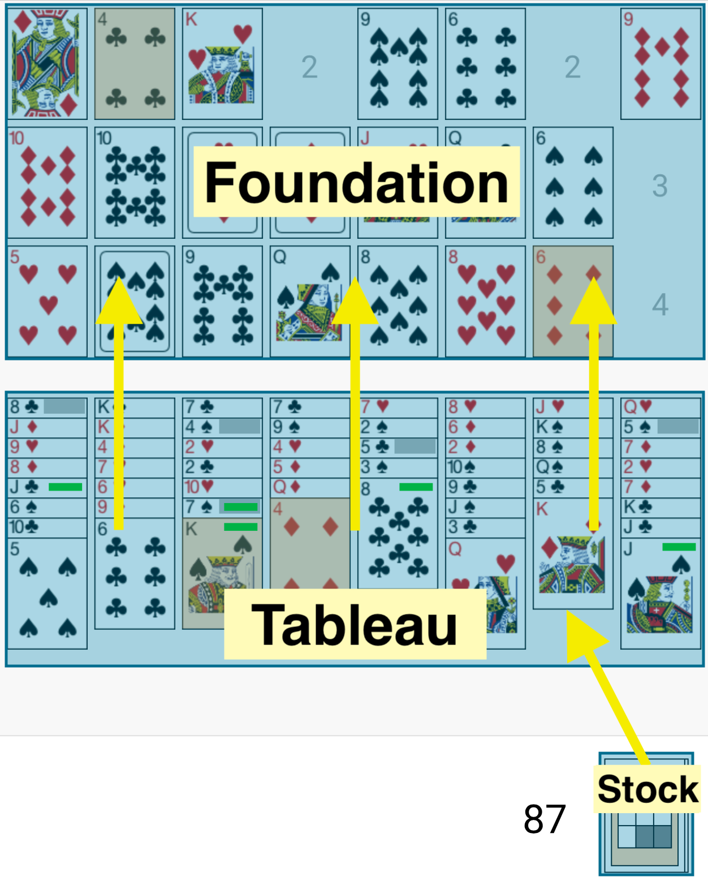
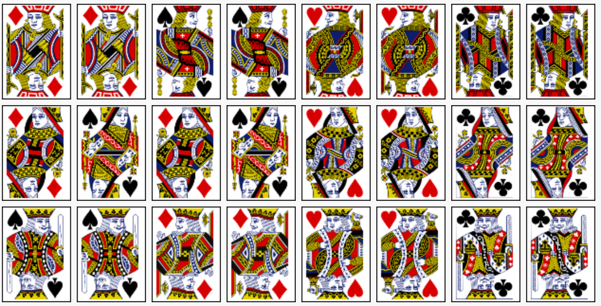
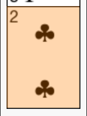
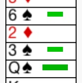
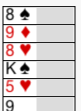
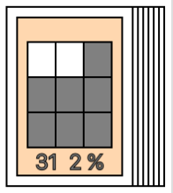
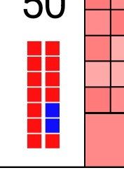

section1
section2
section3
Summary
The object of this solitaire game is to build a complete face-card
gallery of Jacks, Queens, and Kings.
You build sequences of cards on the
Foundation rows by suit (building rules: top row 2-5-8-Jack;
middle 3-6-9-Queen; bottom 4-7-10-King) using the cards of the
Tableau and the still incorrect cards of the Foundation. Deal cards from the Stock to the
Tableau as needed. At the end of the game, let the computer play out the same starting situation
a few times.
Details
Layout

Foundation
24 piles: 3 rows with 8 columns.
Empty spots can be filled with the base cards "2", "3", and "4", as above. Building rule: Add cards by suit, in increasing rank, by a difference of 3.
Cards at their correct position have an altered appearance (no number, plus a narrow frame).
Tableau
8 piles are fed by the cards played from the Stock. Only completely visible cards are available for play.
Stock
The Stock initially consists of two decks (104 cards). As the game begins, the first 24 cards are played to the Foundation. Each time you click Stock, 8 cards move into play, one to each of the Tableau piles.
Ace Pile: Aces are automatically removed to the Aces pile and are not a part of play.
Setup and Play
The game begins by dealing 24 cards, face up, to the Foundation and 8 cards to the Tableau. Some of the cards on the Foundation may now already be at their final position ("2", "3", "4"), and aces go directly to the ace pile. Just tap on a card to play it (it finds its correct position automatically).
You can now
- Move "2", "3", "4" cards to empty spaces in the Foundation area
- Move cards of the same suit and of a 3 point higher rank onto already correct cards of the Foundation
- Undo your moves (but only back to the latest operation on the Stock)
- Deal another 8 cards from the Stock to the Tableau.
You cannot
- Place a card onto an incorrect card of the Foundation (even if it would be in the correct row)
- Move cards of the Tableau to another column of the Tableau
- Move groups of cards
- Undo an operation on the Stock.
Winning situation
You build a complete gallery of all face cards, removing all cards from the Tableau (score: 0)

The appearing photos are all from Blenio
Valley, Ticino, Switzerland
Or, you make a better score than the computer (see the "Statistics" tab). For your personal evaluation use whatever measure you like (better than the minimum or better than the median or the mean).
After the evaluation you start a New game or you Redo the same starting game.
Hints
- You do not have to play all cards which are movable.
- Look for the position of the twin card (the card with the same suit and rank). This can help you avoid (final) jamming situations.
- Focus on the optimal sequence of moves.
- Try to resolve "jammed situations": In the Tableau, a card may cover another card which needs to be played on the Foundation first. This creates a jam, which you can resolve using the twin of the trapped card, when it comes into play.
CAP: "computer-aided play"

Yellow shaded cards are movable. Concentrate your efforts on making good decisions instead of searching around for movable cards.
"Jammed situations" are marked by a blue bar.
Definitely jammed cards- Auto Moves: In many situations there is no reason not to play a movable card: in these cases CAP
does
such evident, unproblematic moves automatically. Some obvious cases:
- the twin card is already in its correct place
- you have two Foundation piles to play a card to
- the twin card is below your card on the Tableau pile
- etc.
- If there is no movable card, the whole playing area gets gray. Click on the Stock to get 8 more cards.
- With the exception of actions on the Stock you can undo one or more moves.
- With a click on Auto play you can switch on/off this feature.
-

The next deal of the stock leads to a jam situation with a 31% probability, or an irreversible final jam with a 2% probability.
Evaluations

During the evaluation process (simulation of 1'000 games) each individual result of the random process is given a small square. It's color depends on the result: blue: your result is better - white: drawn - red: computer is better - dark red: solved game (result 0); if your result was also 0: light gray.
Short Trend Indicators

(in the lower right corner of the statistics graph). The small graph shows the same thing (at least the colors) as the summary table in the Statistics tab: the comparison indicators of the last games.
section3
Gallery Solitaire
Version 3.0.3, © 2025, Adrian Herzog
https://gallery.mapresso.com
24.08.2025, 3.0.3: A controversial indicator has been removed. Result panel cleaned up
17.10.2024, 3.0.2: Error in auto move statistics introduced in 3.0.1 resolved.
23.09.2024, 3.0.1: Additional indicator showing the risk of a stock jam situation on the tableau with the next deal (small numbers showing the probability of a new or even a final stock jam situation).
Game Settings
Animation Speed
Speed at which cards move (slow → fast)
Computer Aided Playing
Statistics
Include your game results in an email
(in CSV format) for further analysis.
Include your game results in an email
(in CSV format) for further analysis.
Confirmation
Acknowledgments
Thanks to Karen Morris for editing the texts, and to Marc Brühlmann for some of the photos.
Vectorized Playing Cards 1.3, Copyright 2011, 2021 - Chris Aguilar - conjurenation at gmail dot com Licensed under: LGPL 3.0 - https://www.gnu.org/licenses/lgpl-3.0.html
Aerial photograph from 1923: ETH-Bibliothek Zürich, Bildarchiv/Stiftung Luftbild Schweiz / Photographer: Mittelholzer, Walter / LBS_MH01-003541